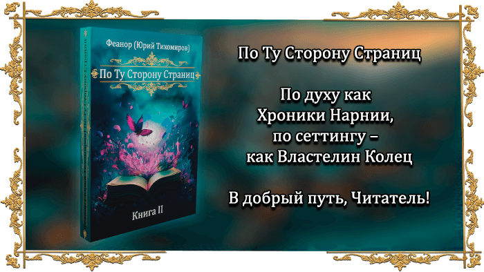
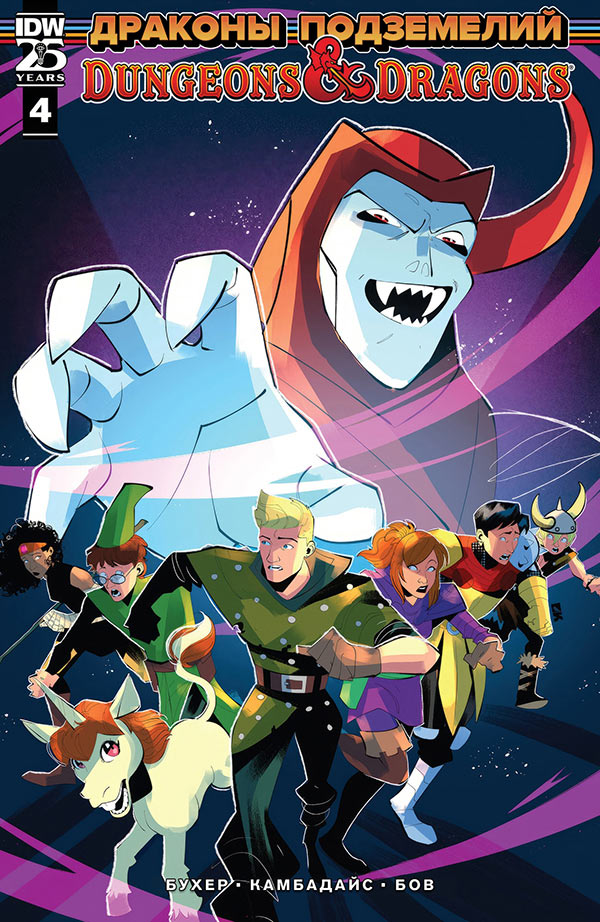
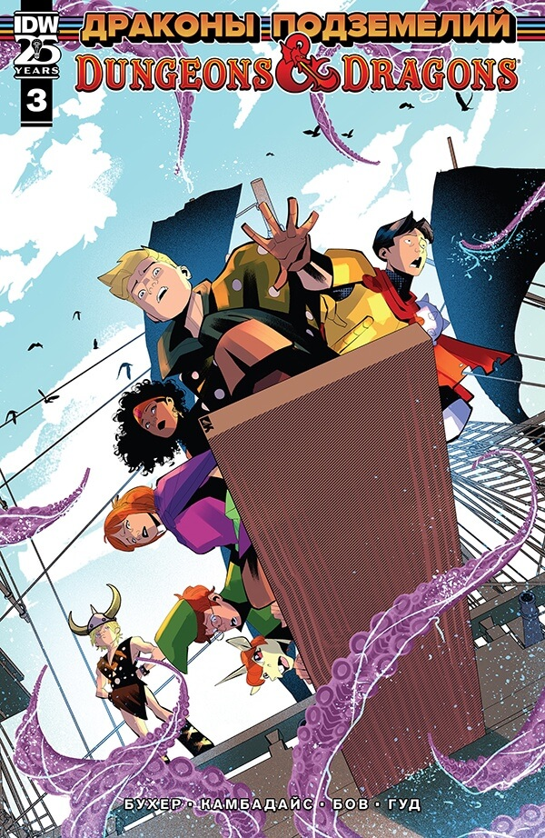
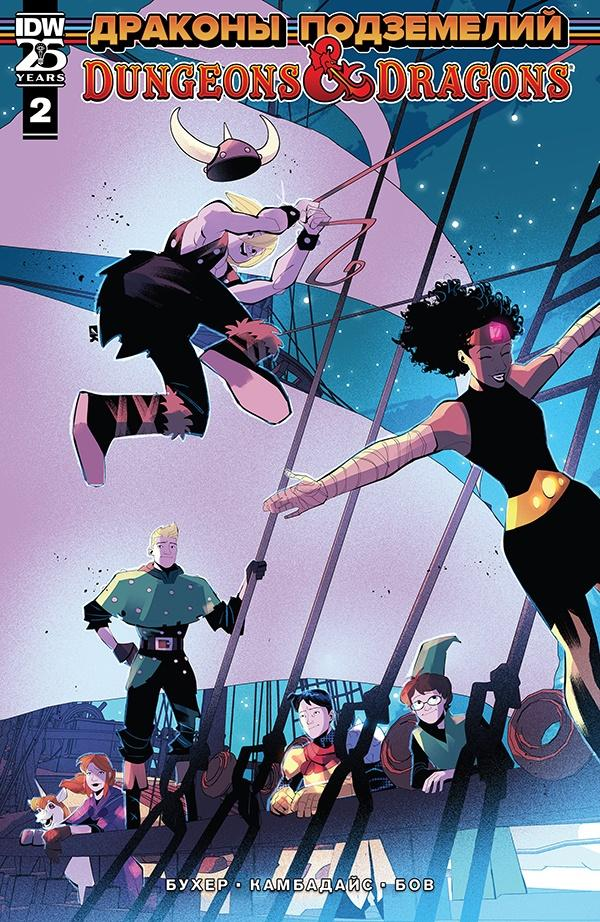
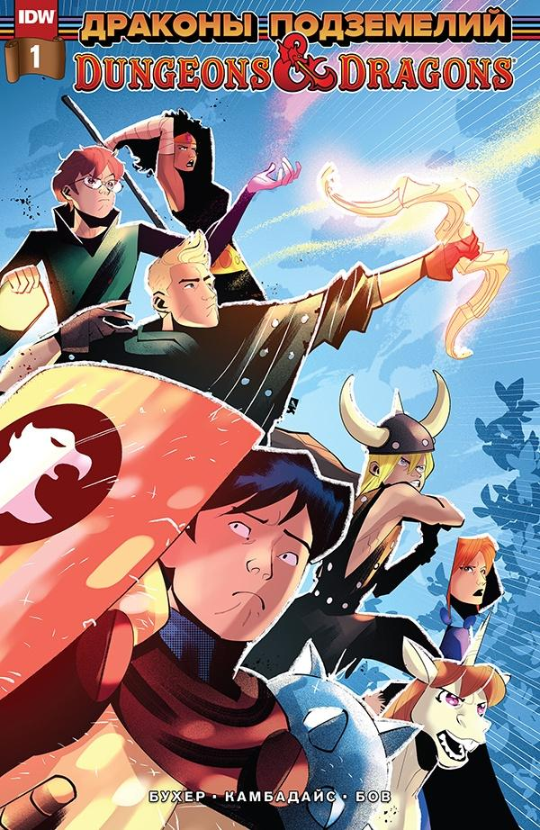
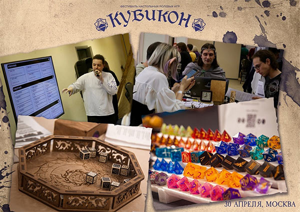
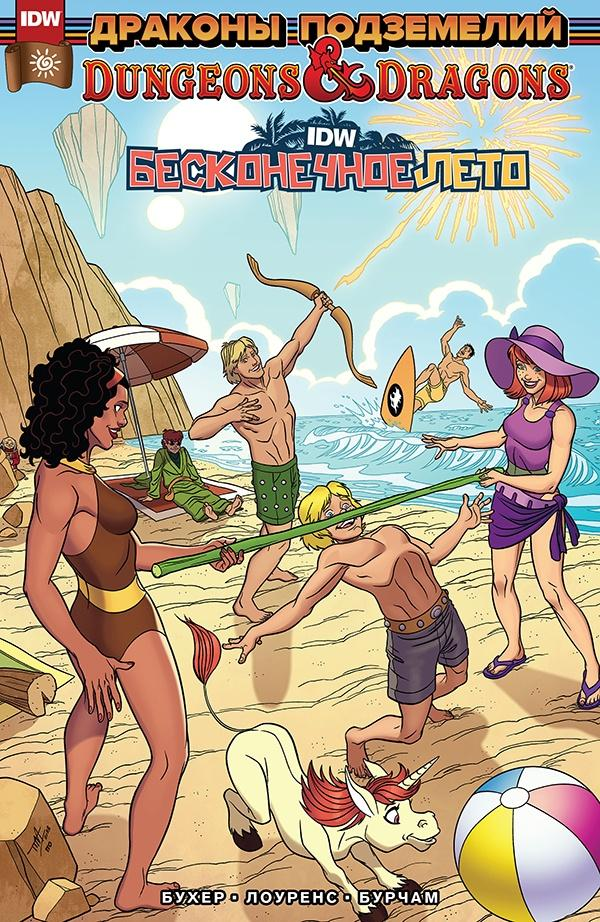

Партнёр: DND Enjoyer
Новости сообщества
Новая, 139-я серия Могучей Девятки уже на Boosty: boosty.to/strannoyemestechko
Прошлые выпуски в общем доступе здесь: youtube.com/@strannoednd
Новая, 138-я серия Могучей Девятки уже на Boosty: boosty.to/strannoyemestechko
Прошлые выпуски в общем доступе здесь: youtube.com/@strannoednd
Новая, 137-я серия Могучей Девятки уже на Boosty: boosty.to/strannoyemestechko
Прошлые выпуски в общем доступе здесь: youtube.com/@strannoednd
Уважаемые коллеги и члены Совета Мудрецов!
Имею честь представить вашему просвещенному вниманию результаты моих последних изысканий касательно загадочной и поистине грандиозной сущности, известной в древнейших источниках как Джергал.
Согласно пыльным манускриптам, обнаруженным в недавно раскопанных руинах легендарной Забытой Библиотеки Эль-Кзандрии, Джергал является не кем иным, как Повелителем Конца Всего, Хранителем Последних Тайн и Верховным Архивариусом Посмертия. Мои кропотливые исследования, включавшие расшифровку сложнейших магических шифров и проведение ряда опасных для жизни ритуалов, показывают, что данная сущность несёт колоссальную ответственность за ведение Великой Книги Судеб – артефакта невообразимой мощи, в котором фиксируется окончательное расположение душ всех почивших существ, от мельчайшей мошки до величайших драконов и даже, осмелюсь предположить, самих богов.
Тщательный анализ редчайших артефактов, добытых ценой жизней целой экспедиции в Запретные Земли ( да упокоит их души Келемвор) , а также расшифровка тайных символов, высеченных на стенах Храма Вечного Мрака, позволяют сделать вывод, что Джергал представляет собой своего рода космического бюрократа с ярко выраженными фаталистическими наклонностями. Его основная функция заключается в поддержании абсолютного порядка в посмертии, причем он, по-видимому, обладает уникальной способностью предвидеть неизбежное угасание всего сущего, включая звезды, планеты и даже само время.
Особо примечательным является тот факт, что Джергал демонстрирует почти маниакальное стремление к систематизации и каталогизации судеб нашего мира, который, согласно его видению, медленно, но верно погружается в пучину небытия. Исследования позволяют предположить, что сам Джергал воспринимает этот процесс не как трагедию, а скорее как естественный ход вещей, к которому следует готовиться со всей тщательностью.
Отдельного упоминания заслуживает крайняя редкость сведений о Джергале в известных нам источниках. За исключением нескольких полустертых упоминаний в древнейших гримуарах, лишь горстка мудрецов, посвятивших жизнь изучению сокровенных тайн мироздания, осведомлена о его существовании. Это наводит на мысль о том, что сам Джергал, возможно, предпочитает оставаться в тени, выполняя свою грандиозную миссию вдали от любопытных глаз смертных.
Так же, в ходе исследований мне удалось обнаружить несколько артефактов, предположительно связанных с культом Джергала. Среди них – Песочные Часы Вечности, способные показывать время, оставшееся до конца существования любого предмета или существа, а также Перо Последних Записей, которым, по легенде, ведутся записи в самой Великой Книге Судеб.
Дальнейшие исследования в данной области представляются не только крайне перспективными, но и потенциально опасными. Они могут не только пролить свет на фундаментальные вопросы бытия и посмертия, но и открыть доступ к силам, способным изменить саму ткань реальности.
В связи с этим я почтительнейше прошу Совет Мудрецов рассмотреть возможность выделения дополнительных ресурсов для продолжения этой важнейшей работы, включая доступ к закрытым секциям государственной Библиотеки и разрешение на проведение ряда экспериментов с использованием артефактов высшего порядка.
С глубочайшим почтением и надеждой на понимание важности моих изысканий,
Исследователь и доверенное лицо Верховного Архимага Зортана Мудрого -
Абу аль Хазим.
Невервинтерская Академия Наук.
Партнер: Lore
Я представляю Вам научный анализ календарной системы Харптоса, широко применяемой в регионах Фаэруна и сопредельных территориях.
Календарь Харптоса основан на лунно-солнечном цикле и состоит из следующих ключевых элементов:
1. Структура года:
- 12 месяцев по 30 дней каждый
- 5 межкалендарных дней
- 1 високосный день каждые 4 года
2. Хронологические единицы:
- День (24 часа)
- Декада (10 дней)
- Месяц (3 декады, 30 дней)
- Год (365 дней, 366 в високосный год)
3. Номенклатура месяцев:
1. Хаммер
2. Алтуриак
3. Чес
4. Тарсак
5. Миртул
6. Киторн
7. Флеймрул
8. Элейнт
9. Элесиас
10. Марпенот
11. Укта(р)
12. Найтол
4. Межкалендарные дни:
- Середина зимы (после Хаммера)
- Зеленотравье (после Тарсак)
- Середина лета (после Флеймрула)
- Высокая жатва (после Элейнта)
- Праздник луны (после Уктар)
- Щитовой сход (високосный день, после Киторна, раз в 4 года)
5. Астрономические соответствия:
- Солнечный год: 365.25 дней
- Лунный месяц: приблизительно 29.5 дней
Для синхронизации календарного года с солнечным циклом применяется високосный день Щитовой сход, добавляемый каждые 4 года.
Данная система демонстрирует высокую точность в отслеживании астрономических циклов и обеспечивает эффективную темпоральную организацию для сельскохозяйственных, коммерческих и административных нужд.
Более подробно сможете узнать из данного труда.
Партнер: Lore
Всем привет!
Мы закончили перевод книги «Поворот Колеса фортуны». Теперь вы можете почитать это замечательное приключение на русском языке!
Спасибо всем, кто поучаствовал в переводе и поддержал, вы булочки ❤
О приключении
Приключение с 3-го по 17-ый уровень
«Поворот Колеса Фортуны» отправит персонажей в тур по удивительным мирам — от планарного мегаполиса Сигил до окраин Внешних земель — где они, объединившись с бессмертными, узнают о заговоре, способном навсегда изменить мультивселенную.
Пока Шемешка расследует происхождение персонажей и странную магию, воздействующую на них, группа отправляется в Внеземье в поисках сбежавшего модрона. След приводит их к таинственному замку, способному перемещаться по плану. Волшебная крепость недавно была захвачена Исчадиями, которые препятствуют изучению замка, поиску информации о пропавшем модроне и исследованию Внеземья.
Скачать можно вот здесь.
Партнёр: Подземелья и Близняшки: Оригинал

«По ту сторону страниц» рассказывает о пятерых друзьях, перенесённых в волшебный мир, населённый эльфами, гномами, орками и необычными людьми. Друзей разбросало по этому удивительному миру, и теперь им предстоит найти друг друга, пройти испытания и узнать о своих необычных способностях.
От их решений зависит судьба целого мира. Читатель вместе с героями пронесётся по воздуху на драконе, исследует древние леса, полные тайн, пройдёт по горным ущельям, отбиваясь от гоблинов, и примет участие в захватывающих приключениях.
Поддержите проект и помогите автору выпустить вторую часть «По ту сторону страниц»! Первую часть уже можно прочитать на Autor.Today (ссылку смотрите в FAQ).
Особенности кампании:
• можно заказать как «цифру», так и печатную версию второго тома;
• можно получить благодарность в книге;
• можно заказать мерч: лимитированные игральные кубики 2d20, сертификат, персонализированный арт и даже эмбиент-музыку!
Книги планируют отправлять в декабре 2024-го.

Всем привет.
У команды "Герои Ветра и сканлейта" вышел перевод четвертого (последнего) выпуска комикса "Драконы подземелий" 2024 года.

У наших друзей - сообщества Dungeons & Dragons: По Ту Сторону Страниц проходит розыгрыш книг на ваш выбор:
I место - 3 книги А5 по 500 стр + печатная книга «По Ту Сторону Страниц»
II место - 2 книги А5 по 500 стр + печатная книга «По Ту Сторону Страниц»
III место - 1 книга А5 по 500 стр + печатная книга «По Ту Сторону Страниц»
IV - V место - электронная книга «По Ту Сторону Страниц»
Подробности условий розыгрыша тут. (если не видите содержимого страницы, отключите addblock)
Всем привет.
У команды "Герои Ветра и сканлейта" вышел перевод третьего выпуска комикса "Драконы подземелий" 2024 года.

Доступен «Бестиарий» из официального приключения «Векна: Накануне гибели» ❤︎
Всем привет-привет!
У нас готово много материалов по Векне, но в первую очередь мы хотим поделиться Бестиарием :)
Тут находятся все статблоки из «приложения А», в том числе и новые.
🍒 Скачать pdf-версию можно бесплатно на boosty.
🍒 Либо в ВК, но когда пост нельзя будет редактировать, то самая свежая версия со всеми правками будет лежать на boosty.
Там вскоре будут публиковаться главы приключения!
P.S. Если вы найдете ошибки, то напишите, пожалуйста, Эфе или в сообщения группы, чтобы я поправила :3
Партнёр: Подземелья и Близняшки

Всем привет.
У команды "Герои Ветра и сканлейта" вышел перевод второго выпуска комикса "Драконы подземелий" 2024 года.

Всем привет! Наше сообщество Пекарня Творцов уже в 6ой раз запускает конкурс коротких приключений (ваншотов) по настольно ролевой игре Подземелья и Драконы.
Для начала поможем новичкам: что такое ваншот?
Это короткое приключения на один вечер. То есть небольшой, но законченный сюжет, который вы сможете поиграть со своими друзьями. Обычно часа на 4, но я видел варианты и на 12 часов. Примеры таких работ вы можете посмотреть среди наших участников прошлых конкурсов.
Что-то конкретное нужно на конкурс?
Нет! Тема - полностью свободная. Вы можете писать киберпанк, химпанк, ворваньпанк и множество других панков. Фентези, современность, фантастику, хорроры, комедии - любой жанр и тему на ваше усмотрение. Главное, чтобы это было в рамках 100к символов без пробелов и соблюдало правила нашего конкурса.
Однако, если вы хотите дополнительную награду, то можете написать приключение на тему Пустыня. Так, чтобы этот биом занимал важную часть вашего ваншота. Приключения по этой теме будут идти по дополнительному рейтингу (т.е. вместе со всем и ещё в один), через который получат небольшую премию.
Что по наградам?
Наш конкурс полностью состоит из благотворительности. Сообщество спонсирует эту движуху. На прошлом конкурсе мы собрали 10'496 рублей. На этом уже собрано 2044.
Буквально каждая работа получает какую-то награду. Да, за последнее место выходит немного, но это честная награда за ваш труд. Хотя бы тортиком себя порадовать.
У нас будет топ для всех, где будут основные награды. Отдельный рейтинг по теме Пустыня со своей небольшой наградой и в дополнении чуть-чуть призовых за лучшее оформление вашей работы.
Точные деньги я назвать сейчас не могу, так как не вижу будущего, но за финасами конкурса вы можете следить в нашей бухгалтерии.
И в дополнении за общее первое место будет Кубок Победителя!
Как проверяют работы?
Сначала мы ждём сами работы. Будем ждать до 10го июня включительно. Затем минимум 3е жюри проверяют работу на публику. Каждый отдельно. На своём стриме. Анноны стримов с проверками они публикуют в Discord-сервере.
Каждая работа будет оцениваться по 4м критериям от 0 до 10 баллов. Сюжет, механика и атмосфера это критерии для общего рейтинга. По их сумме и будут распределяться основные призовые. Отдельно каждый жюри будет отмечать по критерию оформления от 0 до 10 и работы с лучшим оформлением получат отдельный приз. Также жюри будут отмечать соответствует работа теме или нет. Если большинство отметит соответствие, то тогда работа ещё определяется отдельном рейтинге.
Ребята дают мощную критику с указанием на ошибки. Так что это не просто оценки ради оценок, а неплохой такой способ получить более-менее адекватный фидбек от опытных мастеров в ДнД.
В общем, всё сложно, но очень интересно. Мы сами всё посчитаем, а вы не парьтесь и присылайте работу. Приятного аппетита тем, кто проголодался. И удачи ребятам на конкурсе!
Мы закончили работать на первой переведённой книгой — сборником «Ключи от Золотого хранилища». Была проделана большая работа, и мы многому научились!
Вы можете провести все 13 приключений на русском языке.
Отдельное спасибо всем тем, кто помог материально с переводом книги ❤
🍒 Скачать pdf-версию можно бесплатно на boosty.
🍒 Либо в ВК, но когда пост нельзя будет редактировать, то самая свежая версия со всеми правками будет лежать на boosty.
P.S. Если вы найдёте ошибки, то напишите, пожалуйста, Эфе или в сообщения группы, чтобы я поправила :3
Партнёр: Подземелья и Близняшки

Хельм — один из богов в сеттинге Forgotten_Realms. Он воплощает защиту, справедливость и долг. Также он известен под именами Страж и Бдящий. Обычно Хельма представляют, как хладнокровного и сосредоточенного во всех своих поступках бога. Его символ — латная перчатка с глазом, постоянно бдящим за порядком.
Хельму поклоняются паладины, стражники, солдаты, для которых долг — высшее служение выбранному делу. Сам Защитник был избран доверенным лицом верховного бога Ао, и стал верным хранителем его покоев. Увы, тщание Хельма в отношении соблюдения собственного долга однажды привело к трагической развязке.
Однажды богиня магии, Мистра, прибыла к Ао, чтобы сообщить о злодеяниях Бэйна, бога ненависти. Увы, в своём рьяном стремлении она не слушала Хельма, преграждавшего ей путь к Ао. Тот вступил с Мистрой в бой и убил её. Это событие породило большую катастрофу в мире смертных, где всё было буквально пронизано магической энергией. С тех пор многие последователи отвернулись от Хельма, и лишь через продолжительное время вокруг него сплотилась новая паства.
Партнер: Lore
И снова очередное приключение-модуль для Foundry + пак карт!
На этот раз настала очередь недавно вышедшего (и нами переведённого) приключения «Спуск в Затерянные пещеры Цойканта»!
Прочитать про приключение и скачать PDF можно в нашем посте во ВКонтакте.
На Boosty лежит пост с обзором модуля.
Внутри:
💜 35 предметов
💜 Актёры на русском и английском языках, в том числе и призываемые существа монстров
💜 7 музыкальных композиций + музыка на карте
💜 Интерактивное переключение между двумя вариантами карт иллюзий
💜 Переделаны кривые стандартные прегены на играбельные
💜 Пак карт на русском языке, журналы и изображения.
На Boosty вы можете почитать про приключение, а также приобрести карты, которые сделала Эфа (8 вариаций). Таким образом вы можете поддержать наше творчество и помочь нам с подготовкой нового контента для вас :3
Партнёр: Подземелья и Близняшки

Всем привет.
У команды "Герои Ветра и сканлейта" вышел перевод первого выпуска комикса "Драконы подземелий" 2024 года.

Перевод приключения «Векна: Логово мистического Глаза» [Vecna: Nest of the Eldritch Eye translation]
Кто рано встает, тот получает перевод приключения «Векна: Логово мистического Глаза»!
У Эфы оказались самые быстрые лапки на Диком Западе, поэтому сейчас вы можете уже прочитать и провести ваншот, который вышел только вчера :)
О чём приключение?
«Векна: Логово мистического Глаза» — это приключение для группы от четырёх до шести персонажей 3-го уровня пятой редакции Dungeons & Dragons, местом действия которого станет город Невервинтер, расположенный на Побережье мечей. Жуткий культ пророс в его недрах, и теперь персонажи должны проникнуть в логово организации и выкорчевать всех её членов до того, как будет нанесён вред городу.
Внутри также находятся два дополнительных сверхъестественных дара Векны, которые можно использовать в других приключениях.
🍒 Скачать pdf-версию можно бесплатно на boosty.
🍒 Либо в ВК, но когда пост нельзя будет редактировать, то самая свежая версия со всеми правками будет лежать на boosty.
P.S. Если вы найдете ошибки, то напишите, пожалуйста, Эфе или в сообщения группы, чтобы я поправила :3

Доброе утро всем!
Полностью переведено на русский язык приключение «Спуск в Затерянные пещеры Цойканта»!
Сделала PDF + отдельно лист подсчета очков для печати :3
О приключении
Глубоко в горах Ятиль находятся Затерянные пещеры Цойканта, ранее занимаемые легендарным архимагом Иггвилв, Королевой ведьм.
Несмотря на то, что Иггвилв давно покинула эти места, ее логово до сих пор не опустело. Опасные пещеры населяют демоны, великаны и другие ужасающие существа, а охранные чары архимага остаются непоколебимыми. Награды за преодоление этих угроз просто невообразимы: ходят слухи, что Иггвилв собрала волшебный клад огромной ценности, настолько прославленный, что в его поисках погибли десятки искателей приключений.
🍒 Скачать pdf-версию можно бесплатно на boosty.
🍒 Либо в ВК, но когда пост нельзя будет редактировать, то самая свежая версия со всеми правками будет лежать на boosty.
P.S. Если вы найдете ошибки, то напишите, пожалуйста, Эфе или в сообщения группы, чтобы я поправила :3
P.S.S. Приключение было адаптировано под соревновательный режим, который был в старых редакциях, его полная версия выйдет в «Приключениях на Бесконечной Лестнице».
Партнёр: Подземелья и Близняшки

Приглашаем вас посетить Кубикон — фестиваль настольных ролевых игр с огромной игротекой!
Что вас там ждёт:
- Огромная игротека с ваншотами по D&D, PathFinder, FATE, Vampire: The Masquerade, Клинкам во Тьме и другим ролевым системам;
- Увлекательные мастер-классы и лекции с мастерами;
- Развлекательные стенды и презентации авторских систем;
- Сногсшибательная ярмарка со всеми аксессуарами для настоящего мастера!
- Турнир по DnD!
- Настоящие, живые люди, которые прочли рулбуки разных редакций от корки до корки и готовы с вами их обсудить!
Фестиваль пройдёт 30 апреля в гостинице «Измайлово» Бета (Измайловское шоссе, 71к2Б, Москва).
Группа фестиваля: https://vk.com/kubicon

Всем привет.
У команды "Герои Ветра и сканлейта" вышел перевод комикса "Драконы подземелий: Бесконечное лето".
